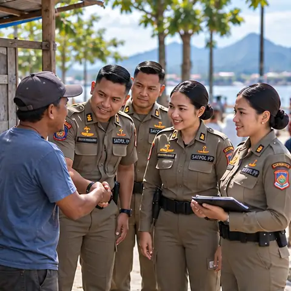
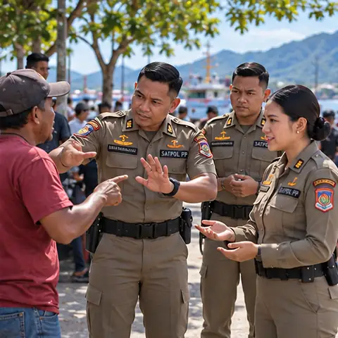
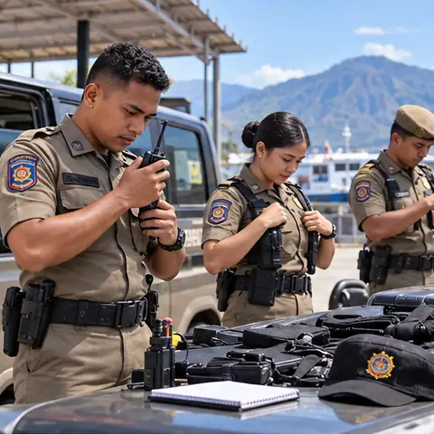
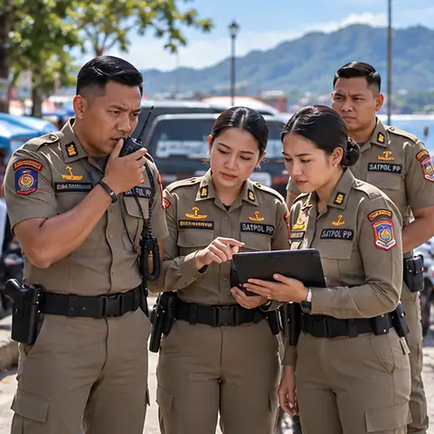
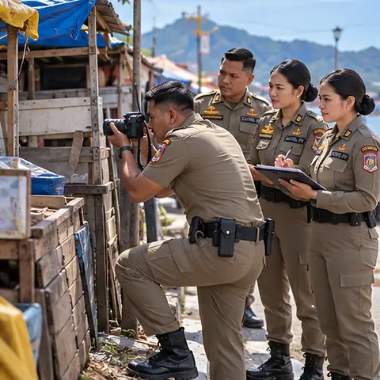
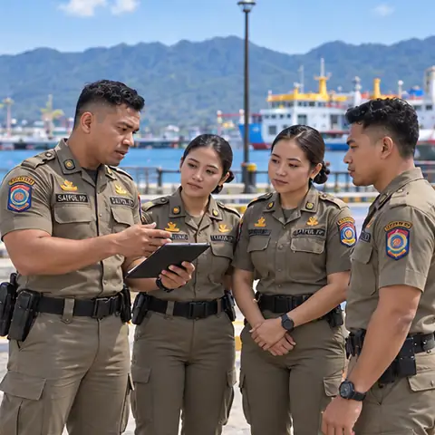
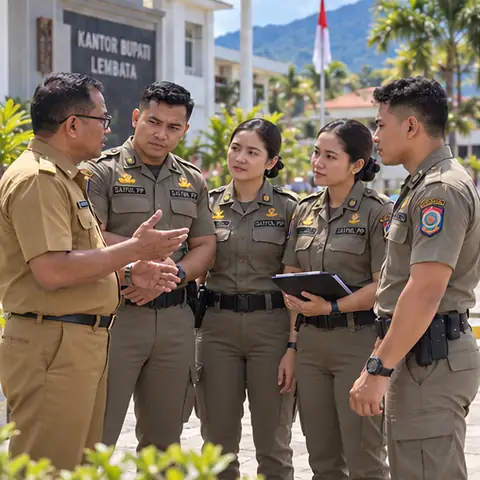

Mulai dengan sapaan. Jangan membuka percakapan dengan tuduhan, bentakan, atau kalimat yang membuat orang langsung bertahan.
PANDUAN DIGITAL BERBASIS QR CODE
Panduan digital sederhana bagi personel Satpol PP Kabupaten Lembata untuk membantu komunikasi awal yang humanis, persuasif, sopan, dan jelas saat berhadapan dengan masyarakat di lapangan.
Buka panduan yang sesuai, pahami contoh komunikasinya, lalu sesuaikan dengan kondisi nyata di lapangan.
Kalimat lapangan yang sopan, tegas, persuasif, dan mudah dipakai saat berhadapan dengan masyarakat.
Tujuan awalnya sederhana: masyarakat memahami siapa petugasnya, apa masalahnya, apa yang diminta, dan apa langkah berikutnya.
Buka satu per satu. Kalimat di bawah bukan naskah wajib. Gunakan maksudnya, lalu sesuaikan dengan situasi nyata.

Mulai dengan sapaan. Jangan membuka percakapan dengan tuduhan, bentakan, atau kalimat yang membuat orang langsung bertahan.
Sebutkan satuan dengan jelas. Masyarakat perlu tahu siapa yang berbicara dan dalam konteks tugas apa.
Sebutkan kondisi yang benar-benar terlihat. Hindari kalimat yang langsung memberi label “salah” sebelum keadaan dipahami.
Biarkan orang menyelesaikan inti penjelasannya. Mendengarkan bukan berarti menyetujui, tetapi mengurangi salah paham sebelum memberi arahan.
Sampaikan apa yang perlu dilakukan, bukan sekadar “harus tertib”. Gunakan alasan singkat yang berkaitan dengan kondisi nyata.
Akui bahwa keberatan sudah didengar, lalu kembali pada inti masalah. Jangan menjanjikan keputusan yang bukan kewenangan petugas.

Turunkan tempo bicara, beri jarak yang aman, dan jangan membalas nada tinggi dengan nada tinggi. Jika tidak aman, hentikan perdebatan dan koordinasikan.
Ringkas apa yang sudah disampaikan dan sebutkan tindak lanjut yang memang dapat dilakukan. Jangan membuat janji yang belum pasti.
Respons singkat supaya petugas tidak terpancing menjawab secara spontan dan memperbesar masalah.
“Kami mengerti Bapak/Ibu sudah lama di sini. Yang kami sampaikan sekarang terkait kondisi yang sedang ditata. Mari kita lihat bagian mana yang perlu disesuaikan.”
“Kami catat keberatan itu. Saat ini kami sedang berbicara dengan Bapak/Ibu tentang kondisi di titik ini. Penanganan lokasi lain akan mengikuti penugasan yang ada.”
“Baik, informasi itu kami catat. Untuk sekarang kami selesaikan dulu kondisi yang ada di depan kita, supaya pembicaraannya jelas.”
“Kami memahami itu. Karena itu kami ingin komunikasikan penataannya dengan baik. Yang kami minta adalah menyesuaikan bagian yang mengganggu ketertiban atau keselamatan.”
“Bapak/Ibu berhak meminta penjelasan. Kami akan tunjukkan dasar yang memang sudah dipastikan. Kalau ada bagian yang belum jelas, kami koordinasikan dulu dan tidak akan mengarang penjelasan.”
“Baik, kami sudah mendengar sikap Bapak/Ibu. Kami tidak akan berdebat. Kondisi ini kami catat dan langkah berikutnya kami koordinasikan sesuai kewenangan.”
Delapan situasi utama memakai pola komunikasi yang sama, tetapi kalimat awal dan batas koordinasinya berbeda.
Enam langkah sebelum menentukan tindakan berikutnya.

Respons awal membantu personel membedakan fakta, risiko, kebutuhan komunikasi, dan kebutuhan koordinasi.
Kalau tidak aman, utamakan keselamatan dan bantuan. Percakapan rutin bisa menunggu.
Kalau ragu, jangan menebak. Catat faktanya dan minta arahan.
Apa yang benar-benar terlihat? Siapa yang terlibat? Pisahkan fakta dari cerita yang masih perlu dikonfirmasi.
Tanya diri: “Apa yang saya tahu pasti?”Lihat kondisi lokasi, jumlah orang, akses keluar, kerumunan, emosi, dan potensi bahaya.
Tanya diri: “Apa yang bisa membuat situasi memburuk?”Jaga keselamatan masyarakat, petugas, dan rekan. Jangan memaksakan percakapan pada kondisi yang berbahaya.
Jika tidak aman: amankan, jaga jarak, koordinasikan.Sapa, perkenalkan diri, jelaskan maksud, lalu dengarkan sebelum menyampaikan arahan.
Gunakan pola 8 langkah pada Panduan Komunikasi.
5Pastikan tindakan berada dalam penugasan dan dasar yang berlaku. Jika masuk ranah instansi lain, koordinasikan.
Ragu bukan alasan untuk mengarang kewenangan.
6Catat waktu, lokasi, fakta, komunikasi yang dilakukan, kondisi terakhir, dan bantuan/arahan yang dibutuhkan.
Tulis fakta. Hindari label, asumsi, dan kesimpulan yang belum terbukti.Pilih kondisi yang paling dekat dengan keadaan di lapangan.
Kenali keadaan sebenarnya, gunakan komunikasi awal, lalu cek kewenangan dan kebutuhan koordinasi.
Latihan memilih respons awal berdasarkan pola komunikasi yang sudah dipelajari.
Simulasi ini bukan ujian keberanian dan bukan penilaian personel. Tujuannya melatih cara berpikir sebelum bertindak.
Pilih respons awal yang paling tepat.
Bandingkan pemahaman sebelum dan sesudah menggunakan SIAP SATPOL PP.
Kerjakan sebelum mempelajari materi. Jawab sesuai pemahaman saat ini. Hasil akan disimpan pada perangkat ini.
Ketika situasi mulai melebar, jangan menahan masalah sendiri. Laporkan secara singkat, jelas, dan tepat waktu.
Cari masalah yang ditemui di lapangan, lihat batas kewenangan, pihak yang perlu dikoordinasikan, serta sumber yang mendukung.
Utamakan Perda/Perkada, SOP internal, surat tugas, dan arahan pimpinan yang masih berlaku. Berita kasus dipakai sebagai contoh konteks Lembata, bukan sebagai dasar hukum berdiri sendiri.
Foto ditampilkan utuh. Ketuk kartu untuk membuka panduan hukum dan batas kewenangannya.
Kenali dasar aturan, posisi Satpol PP, dan kapan penanganan perlu dikoordinasikan dengan instansi lain.
Fondasi nasional tugas Satpol PP: penegakan Perda/Perkada, ketertiban umum dan ketenteraman, serta pelindungan masyarakat.
Buka sumber resmi ↗Rujukan penyelenggaraan ketertiban umum, ketenteraman masyarakat, dan pelindungan masyarakat.
Buka sumber resmi ↗13 panduan ditampilkan
Belajar singkat, ulang kapan saja, lalu cek kembali pemahaman.
Lihat perkembangan pribadi selama menggunakan SIAP SATPOL PP.
Mulai dari pre-test, pelajari materi, coba simulasi, lalu kerjakan post-test.
Catat pengalaman personel setelah mencoba panduan sebagai bahan evaluasi dan penyempurnaan.
Masukan digunakan untuk melihat kemudahan akses, manfaat panduan, dan bagian yang masih perlu diperbaiki. Data pada versi ini dapat direkap untuk kebutuhan evaluasi aktualisasi.
Kumpulkan hasil penggunaan, catat kekurangan, dan gunakan masukan sebagai dasar perbaikan panduan.
Penyimpanan lokal membuat aplikasi tetap bisa digunakan ketika koneksi tidak stabil. Google Sheet dipakai sebagai rekap terpusat untuk laporan aktualisasi. Jadi aplikasinya tidak langsung pingsan hanya karena internet sedang punya urusan pribadi.
Ringkasan isu, gagasan kreatif, kegiatan, stakeholder, dan arah perbaikan yang menjadi dasar pengembangan media ini.
Fokus pemecahan masalah diarahkan pada belum tersedianya panduan komunikasi awal yang sederhana dan seragam bagi personel.
SIAP SATPOL PP – Panduan Komunikasi Lapangan. Panduan digital sederhana yang berisi acuan komunikasi awal bagi personel saat berhadapan dengan masyarakat.
Humanis, persuasif, sopan, jelas, dan mengutamakan komunikasi sebelum tindakan.
Dibuka melalui HP dan diarahkan untuk menggunakan QR Code sebagai akses cepat ke panduan.
Mendukung ASN yang profesional, berorientasi pelayanan, serta memanfaatkan teknologi digital dalam pekerjaan.

SosialisasiMemperkenalkan cara penggunaan kepada personel.
Arahan MentorMendapatkan masukan dan koreksi.Mengumpulkan contoh situasi, masalah komunikasi, masukan mentor/personel, dan menentukan situasi prioritas.
Output: daftar kebutuhan dan situasi komunikasi prioritas.Menentukan struktur panduan, kalimat pembuka, kalimat persuasif, respons terhadap keberatan, dan penyesuaian bahasa.
Output: draft materi komunikasi.Menata materi, membuat halaman digital, menu, QR Code, dan melakukan pengecekan.
Output: website/panduan SIAP SATPOL PP dan QR Code.Menentukan personel uji coba, menjelaskan cara akses, mencoba panduan, dan meminta masukan.
Output: hasil uji coba, dokumentasi, dan masukan.Mengumpulkan hasil penggunaan, mencatat kekurangan, melakukan perbaikan, dan menyusun hasil evaluasi.
Output: panduan yang telah diperbaiki dan laporan evaluasi.Tanpa acuan bersama, cara komunikasi antarpetugas dapat berbeda-beda menurut pengalaman masing-masing.
Kesalahpahaman dengan masyarakat berpotensi meningkat ketika maksud petugas tidak dipahami dengan baik.
Imbauan atau arahan dapat menjadi kurang efektif.
Citra Satpol PP dapat kurang baik bila komunikasi lebih dahulu dipersepsikan sebagai tindakan penertiban daripada pendekatan persuasif.
Pengalaman personel sulit menjadi pembelajaran bersama apabila tidak terdokumentasi.